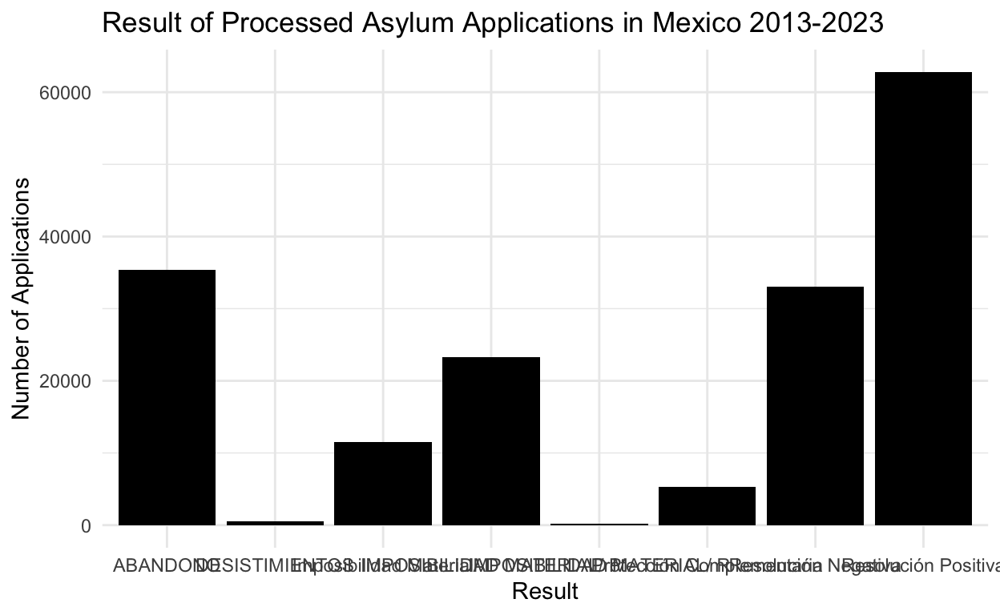
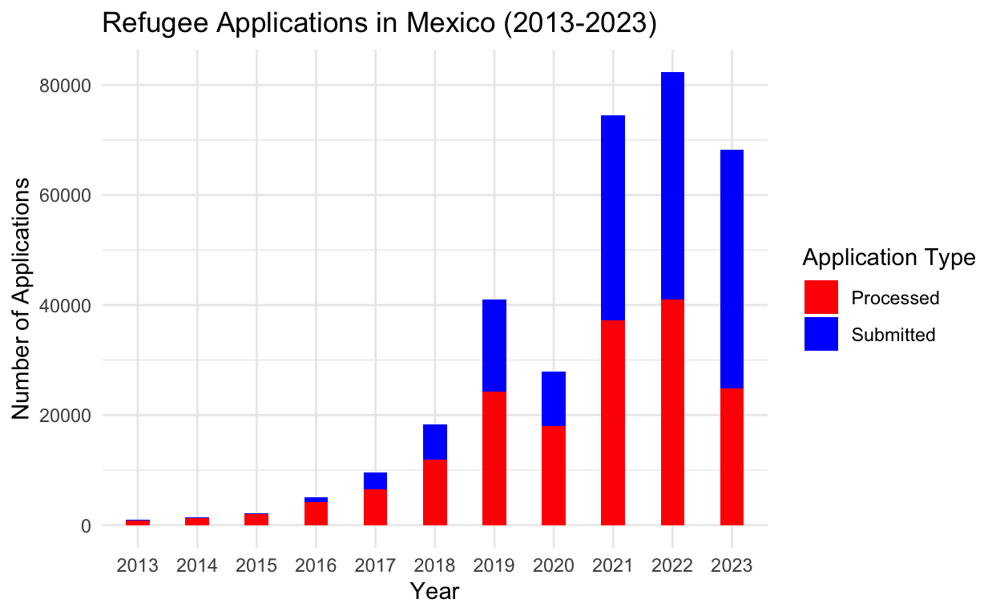
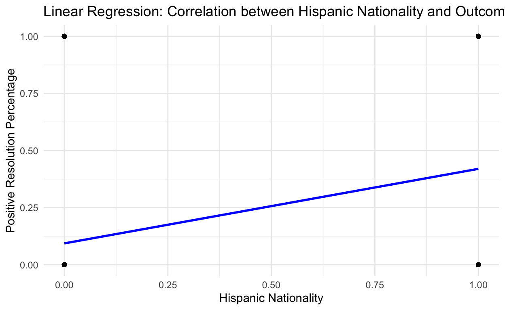
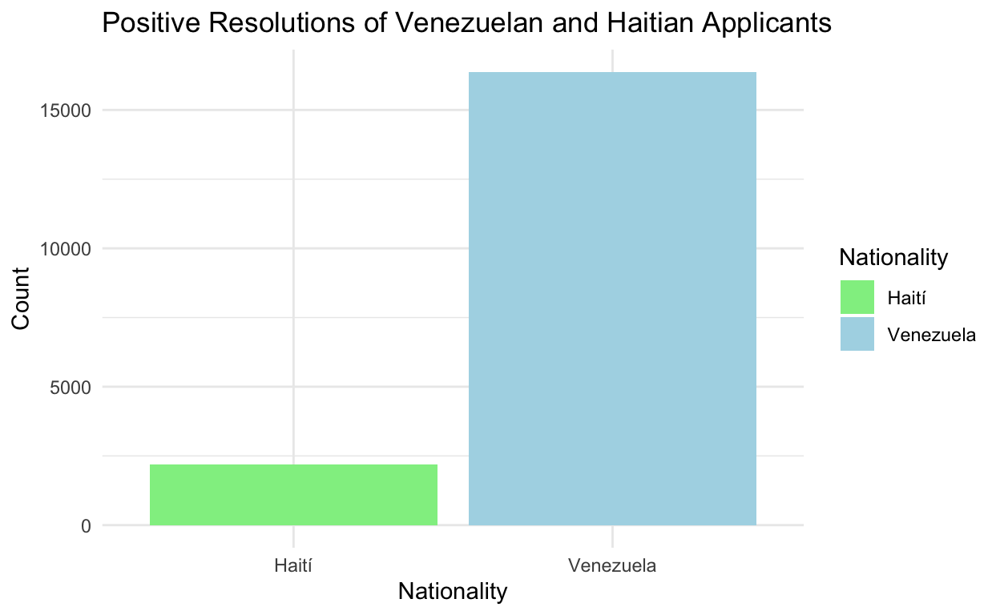

Gov 50 Immigration Project
I am interested in exploring data related to Mexico’s evolving role as a destination country for many immigrants. Over the last decade, there has been a significant increase in asylum applications of immigrants attempting to permamently resettle in the country. I would like to explore this phenomenon, and compile/analyze data that showcase this recent trend over time. I am planning to use data from the Mexican Commission for Refugee Assistance.
Does a migrant’s nationality impact the probability that they get refugee status granted in Mexico? In my research project, I hypothesize, that migrants who indicate a spanish-speaking nationality tend to have higher possibilities to successfully obtain refugee status in Mexico. As a result, I expect that migrants from Haiti, the non-Spanish Caribbean, and other parts of the world tend to have lower possibilities at refugee resettlement. Additionally, though the Mexican Government has made advances to expand their refugee granting criteria, because the 1951 UN Convention of Refugees provides a large number of successful reugee claims to migrants with “well-founded fear of persecution”, then I also predict that Mexican institutions accept Spanish-speakong Latin-Americans at a significant larger rate. For this project, I will analyze the Mexican Government’s Commission on Refugee Assistance open data set that I will use to assess the several reasons that migrants tend to leave their countries of origin. My unit of measurement is whether an immigrant was granted refugee status or not. If the immigrant was provided with a refugee status, implying that the migrant was considered to have had a well-founded fear of persecution, then I will indicate that with 1 for successful application. If a migrant was rejected, then I will indicate that with 0. The independent variable will be the migrant’s nationality. The explanatory variable of interest is whether the nationality impacts the likelihood that a migrant gets refugee status in Mexico. If Venezuelans, Hondurans, and other spanish speaking Latin Americans have a higher rate of refugee success, then that will make my hypothesis correct. If other types of nationalities have a higher rate of success, then I will be proven wrong. In any case, I am also interested in observing the variability of application success and the type of application submitted.
#count the end result of the applications that were processed in total from 2013-23
apps_proc_result <- application_results |>
count(SENTIDO_RESOLUCIÓN)
# Print the data table
print(apps_sub_per_year) year applications
1 2013 911
2 2014 1370
3 2015 2105
4 2016 5002
5 2017 9594
6 2018 18325
7 2019 41063
8 2020 27977
9 2021 74489
10 2022 82326
11 2023 68205#count the end result of the applications that were processed (positive) in total from 2013-23 per nationality
apps_proc_result_pos <- application_results |>
filter(SENTIDO_RESOLUCIÓN == "Resolución Positiva")
table(apps_proc_result_pos$NACIONALIDAD)
Afganistán Angola
6 6
Argelia Argentina
1 6
Bangladesh Belice
7 4
Benín Brasil
6 4
Burkina Faso Camerún
14 44
Chad Chile
1 6
China Colombia
1 257
Congo Costa de Marfil
16 2
Costa Rica Cuba
5 4001
Ecuador Egipto
59 4
El Salvador EL SALVADOR
8470 19
Eritrea España
1 3
Estados Unidos de América Etiopia
1 2
Federación de Rusia Georgia
48 1
Ghana Granada
38 1
Guatemala GUATEMALA
2211 10
Guinea Guinea Ecuatorial
38 1
Guinea-Bissau Haití
1 2190
Honduras Hong Kong
27115 1
Hungría India
1 4
Irak Irán
12 10
Israel Jamaica
2 7
Kirguistán Mali
1 2
Marruecos Mauritania
5 6
Nepal Nicaragua
1 1291
NICARAGUA Nígeria
3 34
Países Bajos Pakistán
1 8
Palestina Panamá
5 3
Perú República de Kazajstán
14 1
Republica de Turquia República Democrática del Congo
5 13
República Dominicana República Islámica de Irán
25 1
Rusia Rwanda
4 1
Senegal Sierra Leona
3 9
Siria Somalia
32 2
Sri Lanka Tanzania
3 1
Tayikistán Togo
1 18
Ucrania Uganda
49 2
Uruguay Uzbekistán
4 1
Venezuela VENEZUELA
16366 198
Yemen
29 apps_proc_result_neg <- application_results |>
filter(SENTIDO_RESOLUCIÓN == "Resolución Negativa")
table(apps_proc_result_neg$NACIONALIDAD)
Afganistán Albania
1 4
Alemania Angola
5 5
Argentina Austria
120 1
Bangladesh Bélgica
2 1
Belice Benín
8 2
Bolivia Brasil
10 27
Burkina Faso Camerún
15 24
Canadá Chile
2 22
China, República Popular Colombia
14 1013
Congo Corea del Sur
7 1
Costa de Marfil Costa Rica
9 22
Cuba CUBA
4614 7
Dominica Ecuador
2 88
El Salvador EL SALVADOR
3431 35
España Estados Unidos de América
14 23
Etiopia Federación de Rusia
1 42
Francia Gambia
3 2
Ghana Guatemala
64 2242
GUATEMALA Guinea
9 8
Guinea Ecuatorial Guinea-Bissau
1 1
Guyana Haití
2 10486
HaitÍ Honduras
3 8111
Hungría India
2 33
Irak Irán
1 1
Israel Italia
2 6
Jamaica Japón
4 1
Líbano Libia
2 1
Macedonia Mali
1 6
Marruecos Mauritania
1 2
Nicaragua NICARAGUA
1324 8
Nigeria Nígeria
2 41
Países Bajos (Holanda) Pakistán
1 8
Panamá Paraguay
11 2
Perú Polonia
70 3
Portugal Reino Unido
6 1
República Checa República de Guinea-Bissau
1 1
República de Suriname Republica de Turquia
2 4
República Democrática del Congo República Dominicana
4 83
Rumania Rusia
2 2
Senegal Sierra Leona
5 6
Singapur Somalia
1 8
Sri Lanka Suiza
1 1
Tailandia Togo
1 8
Trinidad y Tobago Ucrania
1 5
Uruguay Venezuela
9 880
VENEZUELA
2 These two data pieces are essential to answer my research question. As a reminder, I am investigating whether the nationality of an applicant impacts the likelihood that they receive refugee status in Mexico. My hypothesis was that if an applicant is from a Spanish-speaking country, then they are more likely to acquire refugee status. If an applicant is from a non-Spanish-speaking country, then they are more likely to get rejected.
Based on these data visuals, my hypothesis is correct. First, the nationality that is the most impacted is Haiti. According to my data set, while 2190 Haitians managed to acquire refugee status in Mexico, 10486 Haitian applicants have been rejected over the last decade. Haiti is a country in the Caribbean, whose official language is Haitian Creole.
On the contrary, migrants from Venezuela have been overwhelmingly granted refugee status over the last decade. Only 882 Venezuelans were denied refugee status, and 16,366 Venezuelans were granted refugee status. Venezuela is a Spanish-speaking country in South-America.
The reason why I specifically analyzed both cases is because arguably the biggest differences in their country’s context are ethnic and cultural backgrounds. Both countries are experiencing the largest political instability contexts in contemporary Latin-American history, and are often impacted by economic and environmental destitution in the same. I would have expected that if nationality and the corresponding racial implications were not contributing determinants to refugee acquisition, then applicants from these two countries would have been admitted at statistically similar rates. However, despite their similar political and economic contexts, there is a drastically different outcome in refugee status determination in Mexico.
library(ggplot2)
# data frames: apps_sub_per_year, apps_proc_per_year, apps_proc_result
# Creating the line graph for submitted applications per year
ggplot(data = apps_sub_per_year %>% filter(year != 2023),
aes(x = year, y = applications, group = 1)) +
geom_line(color = "blue") +
geom_point(color = "blue", size = 2) +
geom_smooth(linetype = 2, se = FALSE) +
labs(title = "Submitted Refugee Applications in Mexico 2013-2023",
x = "Year",
y = "Number of Applications") +
theme_minimal()# Creating the line graph for processed applications per year
ggplot(data = apps_proc_per_year, aes(x = year, y = applications, group = 1)) +
geom_line(color = "red") +
geom_point(color = "red", size = 3) +
labs(title = "Processed Refugee Applications in Mexico 2013-2023",
x = "Year",
y = "Number of Applications") +
theme_minimal()# Creating a bar plot for the result of processed applications
ggplot(data = apps_proc_result, aes(x = SENTIDO_RESOLUCIÓN, y = n)) +
geom_bar(stat = "identity", fill = "black") +
labs(title = "Result of Processed Asylum Applications in Mexico 2013-2023",
x = "Result",
y = "Number of Applications") +
theme_minimal()
library(ggplot2)
merged_data <- merge(apps_sub_per_year, apps_proc_per_year, by = "year", all = TRUE)
ggplot(data = merged_data, aes(x = as.factor(year))) +
geom_bar(aes(y = applications.x, fill = "Submitted"), stat = "identity", position = "dodge", width = 0.4) +
geom_bar(aes(y = applications.y, fill = "Processed"), stat = "identity", position = "dodge", width = 0.4) +
labs(title = "Refugee Applications in Mexico (2013-2023)",
x = "Year",
y = "Number of Applications") +
scale_fill_manual(name = "Application Type", values = c("Submitted" = "blue", "Processed" = "red")) +
theme_minimal()
Paragraph: Since 2013, the number of refugee applications in Mexico have exponentially increased. Simultaneously, this bar graph indicates how Mexico has also processed, though not completely, refugee applications over the years. This graph indicates that Mexico has become a destination country, and every year there is an increasing number of migrnats that attempt to permanently resettle in the country.
library(dplyr)
spanish_speaking_countries <- c("Argentina","Chile","Colombia","Costa Rica","Cuba","Ecuador","El Salvador","EL SALVADOR","España","Guatemala","GUATEMALA","Guinea Ecuatorial","Honduras","Nicaragua","NICARAGUA","Panamá","Perú","República Dominicana","Uruguay","Venezuela","VENEZUELA")
data <- application_results |>
mutate(spanish_speaking = if_else(NACIONALIDAD %in% spanish_speaking_countries, 1, 0),
approved = if_else(SENTIDO_RESOLUCIÓN == "Resolución Positiva", 1, 0))
fit1 <- lm(approved ~ spanish_speaking, data = data)
summary(fit1)
Call:
lm(formula = approved ~ spanish_speaking, data = data)
Residuals:
Min 1Q Median 3Q Max
-0.42004 -0.42004 -0.09336 0.57996 0.90664
Coefficients:
Estimate Std. Error t value Pr(>|t|)
(Intercept) 0.093359 0.002732 34.18 <2e-16 ***
spanish_speaking 0.326678 0.002996 109.03 <2e-16 ***
---
Signif. codes: 0 '***' 0.001 '**' 0.01 '*' 0.05 '.' 0.1 ' ' 1
Residual standard error: 0.4656 on 172051 degrees of freedom
Multiple R-squared: 0.06462, Adjusted R-squared: 0.06462
F-statistic: 1.189e+04 on 1 and 172051 DF, p-value: < 2.2e-16# Install and load necessary packages if not already installed
if (!requireNamespace("ggplot2", quietly = TRUE)) {
install.packages("ggplot2")
}
if (!requireNamespace("dplyr", quietly = TRUE)) {
install.packages("dplyr")
}
# Load libraries
library(ggplot2)
library(dplyr)
# Your linear regression model
model <- lm(formula = approved ~ spanish_speaking, data = data)
# Create a dataframe for predictions
predictions <- data.frame(data, predicted = predict(model))
# Plotting the data and the regression line
ggplot(predictions, aes(x = spanish_speaking, y = approved)) +
geom_point() + # Scatter plot of the data points
geom_line(aes(x = spanish_speaking, y = predicted), color = "blue", size = 1) + # Regression line
labs(title = "Linear Regression: Correlation between Hispanic Nationality and Outcome",
x = "Hispanic Nationality",
y = "Positive Resolution Percentage") +
theme_minimal()
# Assuming 'application_results' is your data frame
library(dplyr)
library(knitr)
# Filter for positive resolutions
apps_proc_result_pos <- application_results %>%
filter(SENTIDO_RESOLUCIÓN == "Resolución Positiva")
# Count applications per nationality for positive resolutions
table_result <- table(apps_proc_result_pos$NACIONALIDAD)
# Create a nice table
kable(data.frame(Nationality = names(table_result), Applications = as.vector(table_result)),
col.names = c("Nationality", "Applications"),
caption = "Number of Applications with Positive Resolutions Per Nationality")| Nationality | Applications |
|---|---|
| Afganistán | 6 |
| Angola | 6 |
| Argelia | 1 |
| Argentina | 6 |
| Bangladesh | 7 |
| Belice | 4 |
| Benín | 6 |
| Brasil | 4 |
| Burkina Faso | 14 |
| Camerún | 44 |
| Chad | 1 |
| Chile | 6 |
| China | 1 |
| Colombia | 257 |
| Congo | 16 |
| Costa de Marfil | 2 |
| Costa Rica | 5 |
| Cuba | 4001 |
| Ecuador | 59 |
| Egipto | 4 |
| El Salvador | 8470 |
| EL SALVADOR | 19 |
| Eritrea | 1 |
| España | 3 |
| Estados Unidos de América | 1 |
| Etiopia | 2 |
| Federación de Rusia | 48 |
| Georgia | 1 |
| Ghana | 38 |
| Granada | 1 |
| Guatemala | 2211 |
| GUATEMALA | 10 |
| Guinea | 38 |
| Guinea Ecuatorial | 1 |
| Guinea-Bissau | 1 |
| Haití | 2190 |
| Honduras | 27115 |
| Hong Kong | 1 |
| Hungría | 1 |
| India | 4 |
| Irak | 12 |
| Irán | 10 |
| Israel | 2 |
| Jamaica | 7 |
| Kirguistán | 1 |
| Mali | 2 |
| Marruecos | 5 |
| Mauritania | 6 |
| Nepal | 1 |
| Nicaragua | 1291 |
| NICARAGUA | 3 |
| Nígeria | 34 |
| Países Bajos | 1 |
| Pakistán | 8 |
| Palestina | 5 |
| Panamá | 3 |
| Perú | 14 |
| República de Kazajstán | 1 |
| Republica de Turquia | 5 |
| República Democrática del Congo | 13 |
| República Dominicana | 25 |
| República Islámica de Irán | 1 |
| Rusia | 4 |
| Rwanda | 1 |
| Senegal | 3 |
| Sierra Leona | 9 |
| Siria | 32 |
| Somalia | 2 |
| Sri Lanka | 3 |
| Tanzania | 1 |
| Tayikistán | 1 |
| Togo | 18 |
| Ucrania | 49 |
| Uganda | 2 |
| Uruguay | 4 |
| Uzbekistán | 1 |
| Venezuela | 16366 |
| VENEZUELA | 198 |
| Yemen | 29 |
# Assuming 'application_results' is your data frame
library(dplyr)
# Count applications per positive resolution type
apps_proc_result_pos <- application_results %>%
filter(SENTIDO_RESOLUCIÓN == "Resolución Positiva") %>%
count(NACIONALIDAD)
# Count applications per negative resolution type
apps_proc_result_neg <- application_results %>%
filter(SENTIDO_RESOLUCIÓN == "Resolución Negativa") %>%
count(NACIONALIDAD)
# Merge the two tables
merged_table <- merge(apps_proc_result_pos, apps_proc_result_neg, by = "NACIONALIDAD", all = TRUE)
# Rename columns for clarity
colnames(merged_table) <- c("Nationality", "Positive_Resolutions", "Negative_Resolutions")
# Print the merged table
print(merged_table) Nationality Positive_Resolutions
1 Afganistán 6
2 Albania NA
3 Alemania NA
4 Angola 6
5 Argelia 1
6 Argentina 6
7 Austria NA
8 Bangladesh 7
9 Bélgica NA
10 Belice 4
11 Benín 6
12 Bolivia NA
13 Brasil 4
14 Burkina Faso 14
15 Camerún 44
16 Canadá NA
17 Chad 1
18 Chile 6
19 China 1
20 China, República Popular NA
21 Colombia 257
22 Congo 16
23 Corea del Sur NA
24 Costa de Marfil 2
25 Costa Rica 5
26 Cuba 4001
27 CUBA NA
28 Dominica NA
29 Ecuador 59
30 Egipto 4
31 El Salvador 8470
32 EL SALVADOR 19
33 Eritrea 1
34 España 3
35 Estados Unidos de América 1
36 Etiopia 2
37 Federación de Rusia 48
38 Francia NA
39 Gambia NA
40 Georgia 1
41 Ghana 38
42 Granada 1
43 Guatemala 2211
44 GUATEMALA 10
45 Guinea 38
46 Guinea Ecuatorial 1
47 Guinea-Bissau 1
48 Guyana NA
49 Haití 2190
50 HaitÍ NA
51 Honduras 27115
52 Hong Kong 1
53 Hungría 1
54 India 4
55 Irak 12
56 Irán 10
57 Israel 2
58 Italia NA
59 Jamaica 7
60 Japón NA
61 Kirguistán 1
62 Líbano NA
63 Libia NA
64 Macedonia NA
65 Mali 2
66 Marruecos 5
67 Mauritania 6
68 Nepal 1
69 Nicaragua 1291
70 NICARAGUA 3
71 Nigeria NA
72 Nígeria 34
73 Países Bajos 1
74 Países Bajos (Holanda) NA
75 Pakistán 8
76 Palestina 5
77 Panamá 3
78 Paraguay NA
79 Perú 14
80 Polonia NA
81 Portugal NA
82 Reino Unido NA
83 República Checa NA
84 República de Guinea-Bissau NA
85 República de Kazajstán 1
86 República de Suriname NA
87 Republica de Turquia 5
88 República Democrática del Congo 13
89 República Dominicana 25
90 República Islámica de Irán 1
91 Rumania NA
92 Rusia 4
93 Rwanda 1
94 Senegal 3
95 Sierra Leona 9
96 Singapur NA
97 Siria 32
98 Somalia 2
99 Sri Lanka 3
100 Suiza NA
101 Tailandia NA
102 Tanzania 1
103 Tayikistán 1
104 Togo 18
105 Trinidad y Tobago NA
106 Ucrania 49
107 Uganda 2
108 Uruguay 4
109 Uzbekistán 1
110 Venezuela 16366
111 VENEZUELA 198
112 Yemen 29
Negative_Resolutions
1 1
2 4
3 5
4 5
5 NA
6 120
7 1
8 2
9 1
10 8
11 2
12 10
13 27
14 15
15 24
16 2
17 NA
18 22
19 NA
20 14
21 1013
22 7
23 1
24 9
25 22
26 4614
27 7
28 2
29 88
30 NA
31 3431
32 35
33 NA
34 14
35 23
36 1
37 42
38 3
39 2
40 NA
41 64
42 NA
43 2242
44 9
45 8
46 1
47 1
48 2
49 10486
50 3
51 8111
52 NA
53 2
54 33
55 1
56 1
57 2
58 6
59 4
60 1
61 NA
62 2
63 1
64 1
65 6
66 1
67 2
68 NA
69 1324
70 8
71 2
72 41
73 NA
74 1
75 8
76 NA
77 11
78 2
79 70
80 3
81 6
82 1
83 1
84 1
85 NA
86 2
87 4
88 4
89 83
90 NA
91 2
92 2
93 NA
94 5
95 6
96 1
97 NA
98 8
99 1
100 1
101 1
102 NA
103 NA
104 8
105 1
106 5
107 NA
108 9
109 NA
110 880
111 2
112 NA# List of countries to filter
selected_countries <- c("Honduras", "El Salvador", "Guatemala", "Haití", "Brasil", "Federación de Rusia", "Ghana", "India", "Nicaragua", "Venezuela", "Nígeria")
# Filter the merged table for the selected countries
filtered_merged_table <- merged_table %>%
filter(Nationality %in% selected_countries)
# Print or further process the filtered merged table
print(filtered_merged_table) Nationality Positive_Resolutions Negative_Resolutions
1 Brasil 4 27
2 El Salvador 8470 3431
3 Federación de Rusia 48 42
4 Ghana 38 64
5 Guatemala 2211 2242
6 Haití 2190 10486
7 Honduras 27115 8111
8 India 4 33
9 Nicaragua 1291 1324
10 Nígeria 34 41
11 Venezuela 16366 880# Assuming 'application_results' is your data frame
library(dplyr)
# Count applications per positive resolution type
apps_proc_result_pos <- application_results %>%
filter(SENTIDO_RESOLUCIÓN == "Resolución Positiva") %>%
count(NACIONALIDAD)
# Count applications per negative resolution type
apps_proc_result_neg <- application_results %>%
filter(SENTIDO_RESOLUCIÓN == "Resolución Negativa") %>%
count(NACIONALIDAD)
# Merge the two tables
merged_table <- merge(apps_proc_result_pos, apps_proc_result_neg, by = "NACIONALIDAD", all = TRUE)
# Rename columns for clarity
colnames(merged_table) <- c("Nationality", "Positive_Resolutions", "Negative_Resolutions")
# Add a percentage column
merged_table$Percentage_Positive <- paste0(round((merged_table$Positive_Resolutions /
(merged_table$Positive_Resolutions + merged_table$Negative_Resolutions)) * 100, 1), "%")
# Filter out the total row
filtered_merged_table <- merged_table %>%
filter(!is.na(Nationality))
# List of countries to filter
selected_countries <- c("Honduras", "El Salvador", "Guatemala", "Haití", "Brasil", "Federación de Rusia", "Ghana", "India", "Nicaragua", "Venezuela", "Nígeria")
# Filter the merged table for the selected countries
filtered_merged_table <- filtered_merged_table %>%
filter(Nationality %in% selected_countries)
# Print or further process the filtered merged table
print(filtered_merged_table) Nationality Positive_Resolutions Negative_Resolutions
1 Brasil 4 27
2 El Salvador 8470 3431
3 Federación de Rusia 48 42
4 Ghana 38 64
5 Guatemala 2211 2242
6 Haití 2190 10486
7 Honduras 27115 8111
8 India 4 33
9 Nicaragua 1291 1324
10 Nígeria 34 41
11 Venezuela 16366 880
Percentage_Positive
1 12.9%
2 71.2%
3 53.3%
4 37.3%
5 49.7%
6 17.3%
7 77%
8 10.8%
9 49.4%
10 45.3%
11 94.9%kable(filtered_merged_table, format = "html",
col.names = c("Nationality", "Positive Resolutions", "Negative Resolutions", "Percentage of Positive Resolutions"),
caption = "Refugee Application Outcomes by Top Hispanic and Non-Hispanic Nationalities")| Nationality | Positive Resolutions | Negative Resolutions | Percentage of Positive Resolutions |
|---|---|---|---|
| Brasil | 4 | 27 | 12.9% |
| El Salvador | 8470 | 3431 | 71.2% |
| Federación de Rusia | 48 | 42 | 53.3% |
| Ghana | 38 | 64 | 37.3% |
| Guatemala | 2211 | 2242 | 49.7% |
| Haití | 2190 | 10486 | 17.3% |
| Honduras | 27115 | 8111 | 77% |
| India | 4 | 33 | 10.8% |
| Nicaragua | 1291 | 1324 | 49.4% |
| Nígeria | 34 | 41 | 45.3% |
| Venezuela | 16366 | 880 | 94.9% |
# Assuming 'application_results' is your data frame
library(dplyr)
library(knitr)
# Count applications per positive resolution type
apps_proc_result_pos <- application_results %>%
filter(SENTIDO_RESOLUCIÓN == "Resolución Positiva") %>%
count(NACIONALIDAD)
# Count applications per negative resolution type
apps_proc_result_neg <- application_results %>%
filter(SENTIDO_RESOLUCIÓN == "Resolución Negativa") %>%
count(NACIONALIDAD)
# Merge the two tables
merged_table <- merge(apps_proc_result_pos, apps_proc_result_neg, by = "NACIONALIDAD", all = TRUE)
# Rename columns for clarity
colnames(merged_table) <- c("Nationality", "Positive_Resolutions", "Negative_Resolutions")
# Add a percentage column (rounded to the nearest whole number)
merged_table$Percentage_Positive <- paste0(round((merged_table$Positive_Resolutions /
(merged_table$Positive_Resolutions + merged_table$Negative_Resolutions)) * 100), "%")
# Filter out the total row
filtered_merged_table <- merged_table %>%
filter(!is.na(Nationality))
# List of countries to filter
selected_countries <- c("Honduras", "El Salvador", "Guatemala", "Haití", "Brasil", "Federación de Rusia", "Ghana", "India", "Nicaragua", "Venezuela", "Nígeria")
# Filter the merged table for the selected countries
filtered_merged_table <- filtered_merged_table %>%
filter(Nationality %in% selected_countries)
filtered_merged_table <- arrange(filtered_merged_table, desc(Percentage_Positive))
# Create a nice-looking table
kable(filtered_merged_table, format = "html",
col.names = c("Nationality", "Positive Resolutions", "Negative Resolutions", "Percentage of Positive Resolutions"),
caption = "Refugee Application Outcomes for Top Hispanic and Non-Hispanic Nationalities (2013-2023)")| Nationality | Positive Resolutions | Negative Resolutions | Percentage of Positive Resolutions |
|---|---|---|---|
| Venezuela | 16366 | 880 | 95% |
| Honduras | 27115 | 8111 | 77% |
| El Salvador | 8470 | 3431 | 71% |
| Federación de Rusia | 48 | 42 | 53% |
| Guatemala | 2211 | 2242 | 50% |
| Nicaragua | 1291 | 1324 | 49% |
| Nígeria | 34 | 41 | 45% |
| Ghana | 38 | 64 | 37% |
| Haití | 2190 | 10486 | 17% |
| Brasil | 4 | 27 | 13% |
| India | 4 | 33 | 11% |
# Assuming 'filtered_merged_table' is your data frame
library(dplyr)
library(ggplot2)
# Filter the data for Venezuela and Haiti
venezuela_data <- filtered_merged_table %>%
filter(Nationality == "Venezuela")
haiti_data <- filtered_merged_table %>%
filter(Nationality == "Haití")
# Check if the filtered data frames are not empty
if (nrow(venezuela_data) > 0 && nrow(haiti_data) > 0) {
# Combine the data for Venezuela and Haiti
bar_data <- rbind(venezuela_data, haiti_data)
# Create a side-by-side bar plot
ggplot(bar_data, aes(x = Nationality, y = Positive_Resolutions, fill = Nationality)) +
geom_bar(stat = "identity", position = "dodge") +
labs(title = "Positive Resolutions of Venezuelan and Haitian Applicants",
x = "Nationality",
y = "Count") +
scale_fill_manual(values = c("Venezuela" = "lightblue", "Haití" = "lightgreen")) +
theme_minimal()
} else {
cat("No data found for Venezuela or Haiti.\n")
}